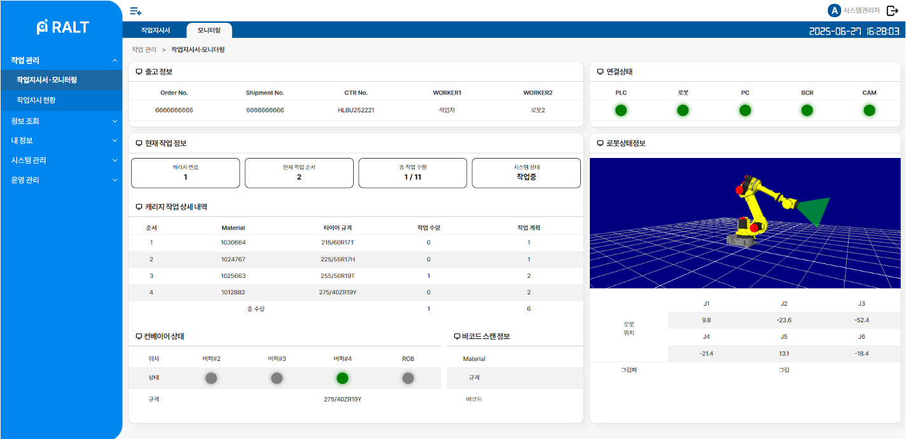
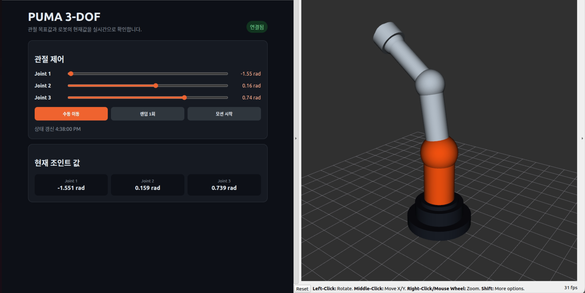

Robot & Simulation
로봇 모델과 동작 시나리오를 구성하고 실제 제어 연동 전 시뮬레이션으로 검증합니다.
- ROS2 · URDF / Xacro
- Isaac Sim 5.0
- Action Graph · State Machine
Robotics software · System integration
안녕하세요, 박준렬입니다. ROS2, FastAPI, PostgreSQL, PLC, 시뮬레이션과 센서 연동을 바탕으로 로봇 및 자동화 설비를 제어하고 모니터링하는 시스템을 개발합니다.

01
About me
화면 구현을 넘어 로봇, 설비, 센서와 데이터가 실제로 연결되는 흐름을 설계합니다.
ROS2 기반 로봇 제어와 시뮬레이션을 중심으로, 실시간 상태 반영부터 센서·PLC·데이터베이스 연계 및 운영 화면 설계까지 로봇 시스템 전반의 경험을 쌓아 왔습니다.
로봇 소프트웨어와 운영 화면을 연결하는 시스템 통합형 개발자를 지향합니다. 현장에서 바로 이해하고 사용할 수 있는 UI와 안정적인 데이터 흐름을 함께 고민합니다.
02
Core capabilities
로봇 모델과 동작 시나리오를 구성하고 실제 제어 연동 전 시뮬레이션으로 검증합니다.
로봇과 자동화 설비의 상태를 실시간으로 반영하는 제어·모니터링 시스템을 설계합니다.
센서, 카메라, 장비와 웹 UI 사이에서 발생하는 연결 및 데이터 처리 문제를 해결합니다.
03
Selected work
로봇 제어, 시뮬레이션, 시스템 통합 역량을 직접 보여주는 작업을 중심으로 구성했습니다.

Flagship · Robot control · Real-time monitoring
ROS2, FastAPI, PostgreSQL을 연동해 작업 지시·현황·경고와 로봇 및 PLC 상태를 웹에서 실시간 확인하는 운영 화면을 설계했습니다. WebSocket 상태 반영, API와 DB 저장 구조, 현장 작업 흐름을 고려한 UI를 구현했습니다.
Core · Isaac Sim · Robotic manipulation
Fanuc 계열 로봇과 SR-6iA, CRX-30iA 모델을 활용해 정형화된 박스뿐 아니라 타이어, 음식, 비정형 물체를 다루는 작업 시나리오를 구성했습니다. 물체마다 다른 형상과 물성, 접촉 조건을 고려해 그리퍼·충돌·강체 설정을 조정하고 컨베이어부터 이송 위치까지의 동작 흐름을 검증했습니다.
Action Graph와 standalone Python 환경에서 상태 전이와 Pick-and-Place 순서를 구현하고, ROS2 제어 흐름까지 연결해 시뮬레이션 동작을 점검했습니다.

Core · ROS2 · Robot model
3-DOF PUMA 타입 로봇을 URDF/Xacro로 구성하고 RViz 시각화, ROS2 관절 제어 노드, 상태 로깅과 웹 브리지를 연결했습니다. 로봇 모델부터 joint command·state와 웹 UI까지 하나의 흐름으로 구성했습니다.
04
New project · In progress
Isaac Sim에서 실제 공정의 동작과 간섭을 먼저 검증하며 새롭게 진행하고 있는 로봇 자동화 프로젝트입니다.
In progress · Isaac Sim · Food automation
크기와 형상, 놓인 자세가 일정하지 않은 음식 원물을 안정적으로 취급하기 위한 로봇 자동화 셀을 진행하고 있습니다. Isaac Sim에서 원물 공급, 로봇 접근, 파지, 이송, 배출로 이어지는 공정 흐름을 구성하고 실제 설비 적용 전 동작 가능성을 검토합니다.
대상별 충돌 형상과 강체 특성, 그리퍼 접촉 조건을 조정하고 로봇·컨베이어·주변 설비 사이의 간섭과 상태 전이를 반복 검증해 비정형 원물에도 대응할 수 있는 공정 구조를 구체화하고 있습니다.
05
Supporting work
독립 프로젝트보다는 범위가 작지만, 실제 시스템을 연결하고 문제를 해결하는 과정에서 쌓은 경험입니다.
PLC · RS232 · Data acquisition
LS ELECTRIC XGK 계열 PLC의 연결·동작 상태 및 센서값과 RS232 계량 장비의 시리얼 데이터를 함께 수집하는 구조를 검토했습니다. 포트와 baudrate를 설정해 읽은 장비 데이터를 웹 대시보드와 이력 관리에 활용할 수 있는 형태로 구성했습니다.
Sensor · ROS2
RealSense, Orbbec, OAK-D의 SDK 설정과 ROS2 연결 과정에서 발생한 장치 인식 및 데이터 연동 문제를 디버깅했습니다.
Computer vision · Mobile monitoring
낙상 감지 결과를 관리자와 보호자가 확인할 수 있도록 역할별 Android 화면과 시니어 정보, CCTV 모니터링 및 알림 흐름을 구현했습니다. Firebase 인증과 Realtime Database로 사용자 정보와 감지 결과를 연동했습니다.
Embedded · TCP/IP
라즈베리파이 2대 사이의 TCP 통신과 Pygame UI, Minimax 기반 체스 로직을 연결하고 데이터 손실 문제를 개선했습니다.
GitHub Repository ↗Robot assets
URDF/Xacro의 frame과 mesh 경로, ROS2 package path, STP·USD 자산 변환 과정의 문제를 정리하고 해결했습니다.
Documentation
시스템 아키텍처, FlowChart, 실험 결과와 트러블슈팅 과정을 다른 구성원이 이해할 수 있는 형태로 정리했습니다.
Let's build connected systems